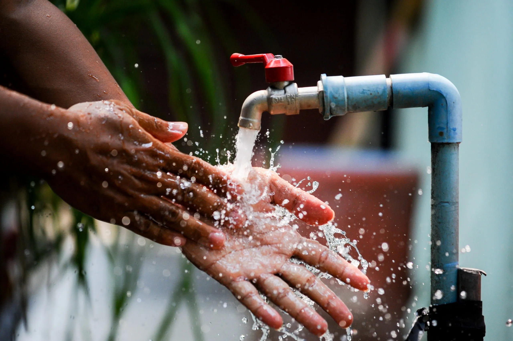

Saneamento básico

O que é saneamento básico?
Saneamento básico é um conjunto de serviços fundamentais para o desenvolvimento socioeconômicas de uma região tais como abastecimento de água, esgotamento sanitário, limpeza urbana, drenagem urbana, manejos de resíduos sólidos e de águas pluviais. O saneamento básico é um direito garantido pela Constituição Federal e instituído pela Lei nº. 11.445/2007.
De forma simplificada, a cadeia do saneamento tem início na captação em reservatórios de água, onde acontece o tratamento e distribuição aos pontos de consumo, sejam eles residenciais ou industriais.Em seguida, é feito o descarte em uma rede de esgoto, direcionando o resíduo para tratamento. O ciclo tem conclusão quando a água tratada é devolvida ao ciclo natural.
Qual a importância ?
O saneamento ambiental é de extrema importância na prevenção de doenças, como a hepatite A, febre tifoide, febre amarela, diarreia, cólera, amebíase e malária, visto que essas enfermidades podem ser provocadas pelo contato com o esgoto (parasitas presentes em dejetos humanos), consumo de alimentos ou água contaminada.
O saneamento básico contribui com a saúde, a educação, o meio ambiente e a economia. A modernização e ampliação do sistema de saneamento básico beneficia, em qualquer lugar do mundo, a sociedade como um todo: as empresas, o país, as cidades e o desenvolvimento social e econômico.
Qual é a situação do saneamento básico no Brasil?
O acesso ao saneamento básico no Brasil ainda não é uma realidade para todos. Embora seja uma necessidade básica da população, ainda há uma diferença regional muito grande em relação ao acesso a esses serviços no país. Enquanto alguns locais tiveram grandes avanços, outros seguem estacionados.
O Ranking do Saneamento Básico 2019 do Instituto Trata Brasil contempla as 100 maiores cidades, nas quais habitam 40% da população. A pesquisa foi feita com base nos dados do Ministério do Desenvolvimento Regional.
De acordo com o ranking, o país ainda tem quase 35 milhões de pessoas sem acesso à água tratada, 100 milhões sem coleta de esgotos (representando 47,6% da população) e somente 46% dos esgotos produzidos no país são tratados. Isso significa mais dificuldade na prevenção de doenças e altos índices de poluição em rios de todo o país.
Das 100 maiores cidades brasileiras, 90 apresentam mais de 80% da população com água tratada. Por outro lado, apenas 46 municípios têm mais de 80% da população com coleta de esgoto. Com relação ao tratamento de esgotos, os dados são piores: apenas 22 municípios tratam mais de 80%.
Mais de 80% dessas grandes cidades têm perdas de água potável nos sistemas de distribuição superiores a 30%, o que indica um grande desafio a ser vencido no setor.